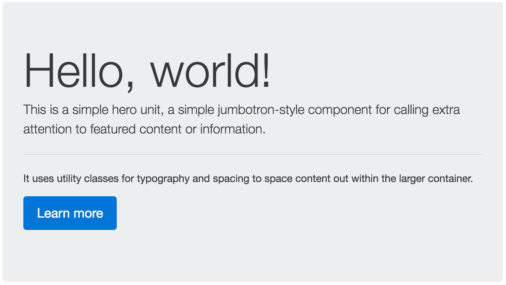
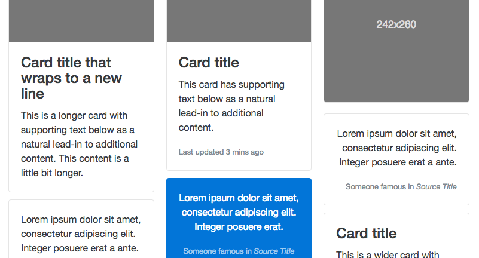

A simple wrapper for positioning branding, navigation, and other elements into a concise header.
Require a wrapping .navbar and a color scheme.
Navbars and their contents are fluid by default.
A lightweight, flexible component that can optionally extend the entire viewport to showcase key content on your site.
Bootstrap makes styling forms easy and fast.
Use .form-group to organize sections of your forms
Can be used on block elements like fieldset or div
Use to style...
Use to style radios and checkboxes, of course.
Add a .btn class along with a style class to your button.
Bootstrap has six styles and variations.
Use .btn-lg or .btn-sm for larger or smaller buttons, respectively.
Use .btn-block for block-level buttons.
Use disabled attribute to disable your buttons.
Prettier versions of dialog prompts!
Triggers sans JS: Set data-target to the modal's ID.
Consists of header, body, and footer.
User .alert to provide contextual feedback messages for user actions.
Bootstrap has four styles: alert-*.
Flexible, extensible content container
Replaced Bootstrap 3's old panels and thumbnails
A variety is supported! Mix and match.
.card-img-*, .card-title, .card-text,
.card-list*, .card-link.
Use .card-group, .card-deck, or .card-column
.card-column creates a Pinterest-board affect.
Before you start creating custom CSS for your design, check the Bootstrap documentation to see if they've already created a class that does what you want.
Always be reusing, check if other developers have created a Bootstrap plugin you can leverage
Want to customize your Bootstrap page even more?
Just create your own CSS and include it in the head, below the Bootstrap CSS to add and override styles!
A font and CSS toolkit originally designed for Bootstrap.
Easily styled with just CSS and fully accessible.
Just add one line in your head to start using it.
Sass is is the most mature, stable, and powerful professional grade CSS extension language in the world.
CSS with superpowers! Reuse variables, mixins, etc
Bootstrap uses Sass style sheets to define base colors, types
Get Bootstrap: All documentation and download files for Bootstrap
Bootstrap Expo: Check out all the rad site designs that use Bootstrap
Bootstrap on GitHub: Check out the Bootstrap repo. Maybe even contribute to the project!